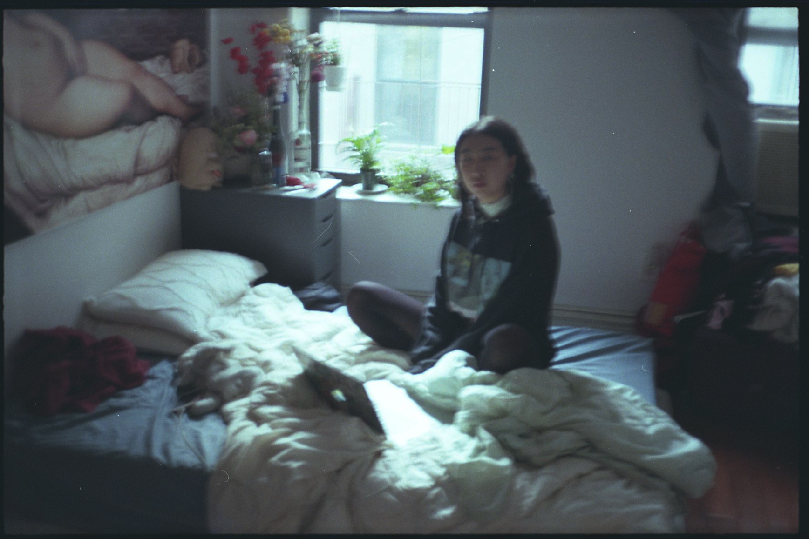
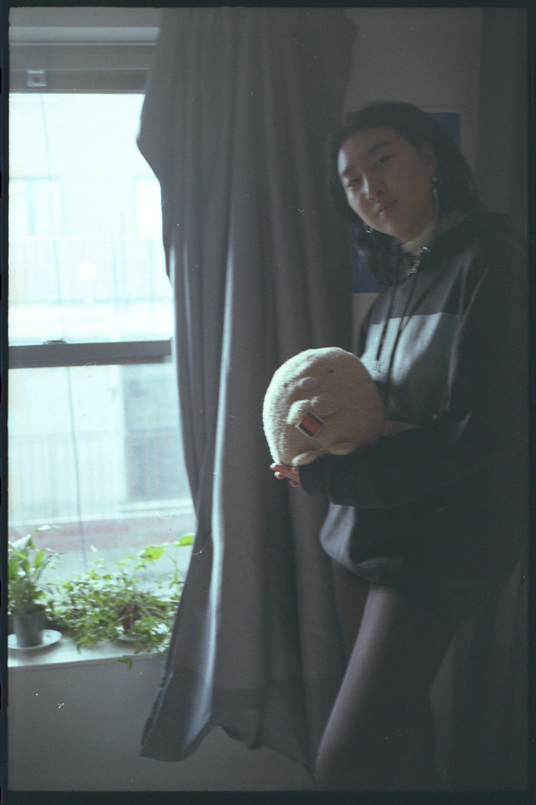
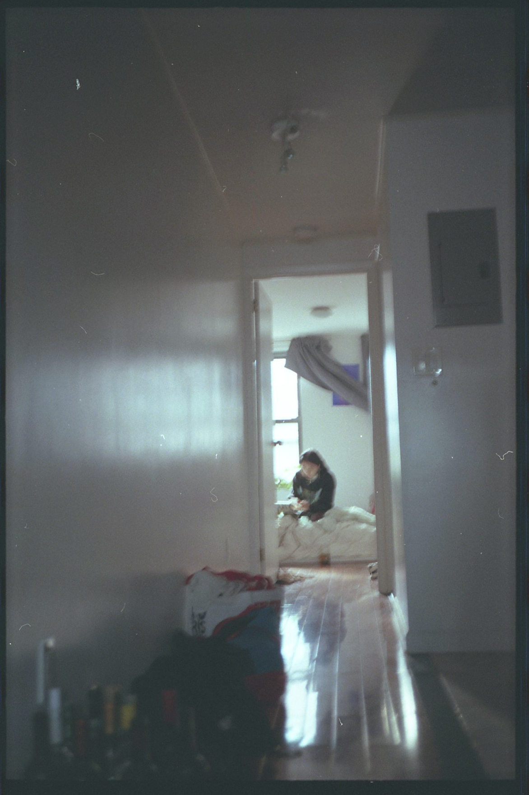
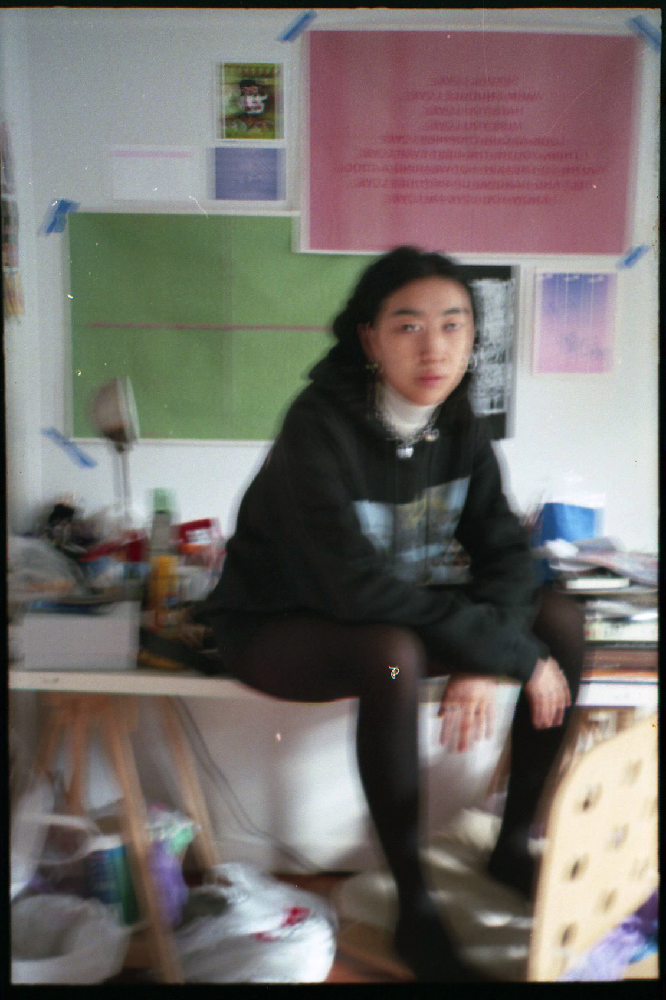

Claire Zhang
claire is a creative director, writer and illustrator. she is a sophomore at parsons majoring in communication design and literary studies.

Nolita, Manhattan, NY
04.21.19 8:15 pm
Tell me about your background. What is your heritage and where did you grow up?
I’m Chinese American, I was born in Connecticut and I moved to San Diego, California when I was 3, which has a pretty high Asian population, especially of Chinese and Korean people. My parents are both from China, from the province Henan.
Generally, what has your experience been like as an Asian woman navigating the city? Do you perceive your identity in a different way here?
I'm sure Juriel (1.) has talked a lot of about catcalling; I think it's a pretty universal experience among Asian women that we experience really racialized catcalling, when oftentimes it's this race identifying. I get konichiwa all the time, I get anneyong haseyo...
I guess I would want to talk about my experience in the Parsons's bubble, and how it's very different from the entire city. Because Parsons is mostly Asian, I realize that most of my friends are Asian and I end up getting sucked back into this Asian bubble, where we all have the same opinions and we all have this similar experience, which can be very comforting. But when I hang out with my partner, who is white, or their friends, I realize how diferent the way they think is and then it becomes very polarized.
How so?
Some jokes that I make with my Asian friends won't go over well or they just don't get it. They just don't have that same baseline experience required to even understand that it's funny. They haven't done anything offensive obviously, but sometimes it makes me a little uncomfortable, because they don't really understand where I'm coming from with this and they never will probably.

"Because Asian Americans are marginalized as this invisible minority, the model minority, we often don't fit into a lot of the dialogue that goes on in political or media discourse. We're underrepresented in many ways and that leads to us being even more considered submissive or docile in that we don't get a chance to voice our opinion, or say, 'Hey, we're here, we have shit to say.'"
What does the term yellow fever mean to you or say to you?
In America especially there's this exotification and fetishization of cultures that Americans are not really aware of, or exposed to. In this current climate it's starting to change a little bit, I'm seeing a lot more representation like Banana Mag and— I don't find this to be a very good example because it's heavily gendered— but Crazy Rich Asians. I'm glad to see that there's some change happening on those levels representation wise.
In another interview (2.), we talked about how we felt Crazy Rich Asians still plays into some of society's stereotyped expectations. But it still is ground-breaking for having an all-Asian cast.
It just really embodied every stereotype you could ever have about Asian culture. For bringing awareness and showing that we're out here, I think it was great. But before that, I feel like white people just don't really think about us, or when they do it's in a very marginalized way. It has a lot to do with the demasculinization of Asian men, oftentimes they make some kind of dick size jokes, Asian men are short and skinny and nerdy; with Asian women it's the complete opposite, where it's the super sexualization of Asian women, really absurd fetishization.
There are so many stereotypes you could list— they don't talk back, they cook for their man, they're exotic. That's the whole idea of mail-order brides when Asians first started immigrating to America, and I think they still are a trend in a different way, where people are returning to China to get a wife. Especially becuase women in China right now are a commodity, because of the one-child policy, there's just no women anymore.
Yeah, China has this huge gender gap now, I think the highest in the entire world, and that's because they got rid of all their girls.
It's very much unbalanced in a way. It's even more furthering the objectification of Asian women, where it's like they're a commodity now, they're an object that I need to have. And in China, women are still treated like second-class citizens or that they're meant to stay in the house.

Have you had any experiences encountering these stereotypes, or being fetishized because of your race?
I was a pretty active Tinder user in the summer, that's my main experience with yellow fever, is people being like, 'How does that Asian pussy taste? Like white rice?' Whenever people say shit like that, they would be like, 'I'm just joking, it's just a joke, can't you take a joke?' You making my experience a joke is extremely problematic in that you're marginalizing and condescending it.
And also the fact that your joke comes from your position of power.
There's this lnstagram account, @thefleshlightdiaries, she posts all these really nasty Tinder messages that white men will send to her about her race- she's Chinese-and I've gotten like half of those. Even then it's not really the crazy shit, most of the time it's microaggressions. To me that's even more dangerous, because these guys don't know that they're being racist. They would probably claim that they're super liberal, but then that becomes their shield. Because once you claim that you're woke, you don't have to self-examine anymore, you don't have to reassess and then you end up pulling shit.
Microaggressions like, 'Where are you really from?' are really harmful. Has your sense of identity shifted with this new knowledge or understanding in mind?
Yeah, 'Where are you really from?,' that's so othering. It makes me the other, in a country where I was born, and I struggled a lot with that growing up. I think before I would have kind of taken it if somebody were to say something mildly racist or a microaggression, I would be like, 'Oh my parents are from China,' and then I would just let it go. But now I have become much more accepting and proud of my identity. I feel like I'm more in a position where I can educate people now.
How have these experiences affected the way you sense your identity?
One thing that's kind of funny is every time I date a white person, I have to consider that maybe it might be yellow fever. I wonder how many Asian people they've dated before me, and then I find out they dated three Asian people in a row before me, that's like fetish territory and I have to consider that. Also, the fetishization of cultural objects, like qipaos. Qipaos are not meant to be sexual, they're meant to be elegant eveningwear.
Yeah, formalwear. And it's so dangerous that qipaos are being sexualized by Westerners appropriating Asian culture, because Asian women are already so sexualized.
So sexualized, people are wearing them to prom, Pretty Little Thing made this one where the slit is all the way fucking up here, you have to wear it without any underwear. My ex-- we weren't dating, we were just hooking up-- he asked me once to wear a qipao in bed. He also asked me to speak Chinese to him in bed.
Oh, that's really terrible and objectifying.
He wasn't white, but he was Middle Eastern, so that's not his experience. And even if he was Asian, that's still problematic, because you can still be fetishizing your own race. That definitely is prevalent; I think Asians in general are fetishizing Korean culture very much right now with the whole advent of K-Pop. A lot of people are appropriating or going after it, like it's a trend, which is really scary.

"That exists, but it's also in itself so problematic. Because we're taught to crave or idealize Western culture and it becomes so internalized that it manifests itself in people dating white people, because they want that kind of power for themselves."

You mentioned before that social media can create a disconnect between true and false personas. Do you think that has any influence in generating these stereotypes?
It becomes a lot easier for people to put you into a box, to fetishize or exoticize you, because all they have to go on is a bunch of photos and captions. They build up this idea, this whole fantasy about you, sometimes without even talking to you, and it's scary. Because people will treat you differently based on what they think from your social media and often times it's not true or not you.
Do you ever consider yellow fever subconsciously or unconsciously?
I think I've always known, especially when I go back to China, I really see the difference in the way I act, as an American, and as a Chinese girl acts. There's a completely different expectation. For me, I am very opinionated and loud, and those are traits that my extended family has told me, 'You would never get a husband in China.' And that's good honestly, if that's what they're expecting from me, because the stereotype has to come from somewhere and that stereotype is perpetuated by China, in that they try to raise their girls as submissive and knowing their place. Western culture takes that and think this is how Chinese girls should be and this is how all of them are. And it perpetuates itself in Tinder messages or in hookups with random strangers, who are surprised by, in a condescending way, how opinionated I am.
Can you share something you've learned, relating to being fetishized?
I'm constantly learning, I'm always in the learning process, I guess it's more of an unlearning process, where I have to unlearn a lot of internalized self hatred for being Asian, and a lot of internalized 'this is how I should act because I am Asian.' I am constantly trying to unlearn what Western culture has beat into me.
What do you think needs to change to move in the right direction?
More Asian representation, more Asian voices in the mix. Giving us a voice is really important, because there's no way white people or other people are ever going to understand your experience if you don't talk about it, or they don't ask about it or even know how to ask about it. So we need to tell people.